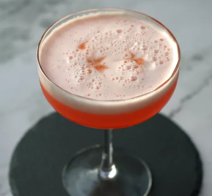

Aperol Sour

Chill your glass in the freezer while preparing the cocktail.
Ingredients
- 1 1/2 fluid ounces Aperol
- 1 1/2 fluid ounces gin
- 1 fluid ounce fresh lemon juice
- 1 fluid ounce simple syrup
- 1 large egg white
- 2 dashes bitters, such as Angostura Bitters®
- 1 cup ice
Steps
- Combine Aperol, gin, lemon juice, simple syrup, egg white, and bitters in a cocktail shaker.
- Shake mixture until frothy, 30 to 45 seconds.
- Add ice to shaker, and shake again until chilled, 15 to 30 seconds more.
- Strain into chilled coupe.
- Garnish with an additional dash of bitters, if desired.